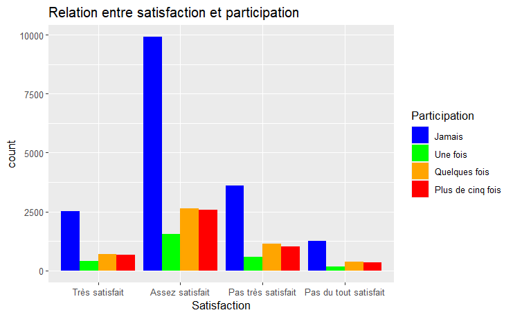

TP2:Étude de l’effet de la satisfaction démocratique sur le niveau de participation à des organismes politiques (Option 2).
Author
Egemen Akyildiz
Published
February 5, 2024
Introduction
Il y a eu deux élections au Canada au niveau fédéral en 2019 et en 2021. Dans les deux cas, le premier ministre sortant Justin Trudeau les a emporté. À l’aide de deux sondages trouvés sur le site web Odesi.ca qui ont eu lieu durant les deux campagnes électorales nous allons nous poser une question. Le niveau de satisfaction avec la démocratie au Canada et le niveau de participation politique, plus précisément le volontariat ou l’association aux groupes ou organisations a-t-il un lien? En d’autres mots, le niveau de satisfaction avec la démocratie affecte-t-il la participation politique autre que le vote.
C’est une possible corrélation que nous pourrions trouver intéressant d’étudier de plus près. Dans toutes les démocraties du monde, les citoyens sont de moins en moins positifs au sujet de ce type de régime. Une certaine désillusion face au modèle démocratique règne. Ce manque de satisfaction pourrait mener à une plus faible participation politique, ce qui augmenterait aussi le manque de confiance envers le modèle démocratique. Il se pourrait qu’il y ait un cercle vicieux, et nous désirons analyser le potentiel d’existence de ce lien.
Les données que nous allons utiliser viennent comme nous l’avons dit plus haut de deux sondages élaborés durant les campagnes de chaque élection, 2019 et 2021. Ces sondages viennent d’Élections Canada, agence non-partisane de l’État. Les réponses récoltés dans ces sondages seront utilisées. Nous avons utilisé deux sondages pour pouvoir avoir un plus grand nombre de répondants. Malgré le fait que les sondages ont été fait à deux ans d’écart, nous estimons pour simplifier les choses qu’il ne s’est pas passé d’évènements assez important au sujet de la démocratie. Nous rappelons que l’évènement du freedom convoy s’est déroulé en 2022.
Données et méthode
Les données de sondage sont de type catégoriel. Les deux sondages ont un très grand nombre de participants. Il y a dans le premier sondage, celui de 2019, 37822 répondants et 633 variables. Le deuxième sondage de l’élection de 2021 a un total de 20968 répondants et 1090 variables. Les variables catégorielles que nous avons extrait des deux sondages sont de type ordinal et exactement les mêmes. La variable satisfaction a 5 réponses possibles comme suit: 1 = Très satisfait, 2 = Assez satisfait, 3 = Pas très satisfait, 4 = Insatisfait, 5 = Je ne sais pas/ne veux pas répondre. La variable participation, qui demande le niveau de participation dans les douzes derniers mois, a les suivantes: 1 = Jamais, 2 = Une fois, 3 = Quelques fois, 4 = Plus de cinq fois, 5 = Je ne sais pas/ne veux pas répondre. Bien évidemment, le sondage canadien a été fait en anglais mais nous prenons la liberté de traduire les termes en français dès maintenant.
Parlons maintenant du processus de nettoyage, uniformisation et ainsi de suite. Tout d’abord nous avons téléchargé les bibliothèque “dplyr” et “ggplot2”, le premier pour certaines commandes que nous ne pouvions pas nous en passer, la deuxième pour la création de notre graphique.
Ensuite nous avons téléchargé les bases de données que nous avions ultérieurement placé dans le fichier du tp2. La commande “read.csv” a été mobilisé à cette fin pour nos deux bases de données.
Les deux bases de données téléchargé sur Rstudio, nous avons modifié quelques données. Nous avons changé les noms des variables à l’aide de la commande “rename” pour qu’elles ne soient pas que des lettres et chiffres sans sens. Et nous avons supprimé la réponse 5 des deux variables avec la commande “filter” car elles ne nous aidaient pas dans l’élaboration du travail. Ce sont des valeurs que l’on pourrait qualifier de polluante. Et nous nous sommes assuré avec la commande “na.omit()” qu’il ne se trouvait plus de lignes avec des valeurs manquantes en les supprimant. Tout cela pour nos deux bases de données.
Ensuite nous avons combiné nos deux bases dans une seule avec la commande “bind.rows()” qui fusionnent les lignes des deux bases de données.
Par la suite, nous avons transformé nos variables ordinales en variables numériques afin d’aider à la fabrication de notre graphique grâce à la commande “mutate()” et “as.numeric”. Ceci est utile dans l’éventualité que nous voulons faire des calculs d’analyse. Nous avons bien entendu appliqué la commande “filter()” pour nous assurer qu’il n’y avait pas de lignes avec des valeurs manquantes, ce qui pourrait ruiner notre résultat.
Ensuite pour pouvoir créer un graphique le plus lisible possible, nous avons créer une nouvelle colonne dans notre base de données qui lie les valeurs numériques de la variable “satisfaction” aux terme décrits plus tôt: “Très satisfait”, “Assez satisfait” et ainsi de suite. Tout cela avec la commande “factor()”, et les arguments “levels()”, reliés aux chiffres et “labels()” reliées aux étiquettes. De plus, nous avons aussi utilisé “participation_labels <- c()” pour créer un vecteur qui lie les étiquettes de la variable participation (Jamais, Une fois etc.) pour pouvoir éclaircir notre graphique fait avec ggplot2 en étiquetant les chiffres de la variable “participation” dans la légende.
Résultats et graphique

Les résultats ne sont pas très impressionants. Nous voulons tout d’abord mentionner le nombre d’observations dans chaque base et le nombre de variable. La base de données de 2019 après nettoyage contient 9675 observations et 2 variables tandis que celle de 2021 contient 19804 observations et 2 variables. Bien entendu, les 2 variables sont les mêmes dans les deux cas. Nous avions supprimé la cinquième réponse de chaque variable des deux bases. La base de données combinée a un total de 29479 observations avec 3 variables. Il est important de noter que la troisième variable n’est qu’une version en mots de la variable “satisfaction”, ce qui nous était utile pour le graphique. Donc nous pouvons tout juste dire qu’en réalité nous n’avons que deux variables pour la base de données combiné, que nous avons nommé “combined_data”. Les variables viennent des sondages élaborés par Élections Canada durant les campagnes présidentielles.
Comme nous pouvons le voir dans le graphique la plus grande part des répondants sont assez satisfaits avec la démocratie au Canada. Mais le fait que le nombre de gens très satisfaits de la démocratie soit aussi proche du nombre de gens qui ne sont pas du tout satisfait est très inquiétant pour le futur de notre pays. Le deuxième plus grand nombre d’observations vient des gens qui ne sont pas très satisfaits, encore un mauvais présage. Le nombre de gens qui n’ont pas du tout participé à un organisme politique est largement majoritaire au reste. Extrêmement peu de gens n’ont participé qu’une seule fois. Et il se trouve que le nombre de gens qui y ont participé quelques fois à cinq fois et plus est très similaire. Proportionnellement parlant, le graphique nous montre que le niveau de participation politique est relativement le même pour tout les niveaux de satisfaction. Ceci est plutôt étonnant. Nous nous attendions à une corrélation claire est nette mais nous ne l’avons pas obtenu.
Annexe
library(dplyr)
Warning: package 'dplyr' was built under R version 4.3.2
Attaching package: 'dplyr'
The following objects are masked from 'package:stats':
filter, lag
The following objects are masked from 'package:base':
intersect, setdiff, setequal, union
library(ggplot2)
Warning: package 'ggplot2' was built under R version 4.3.2